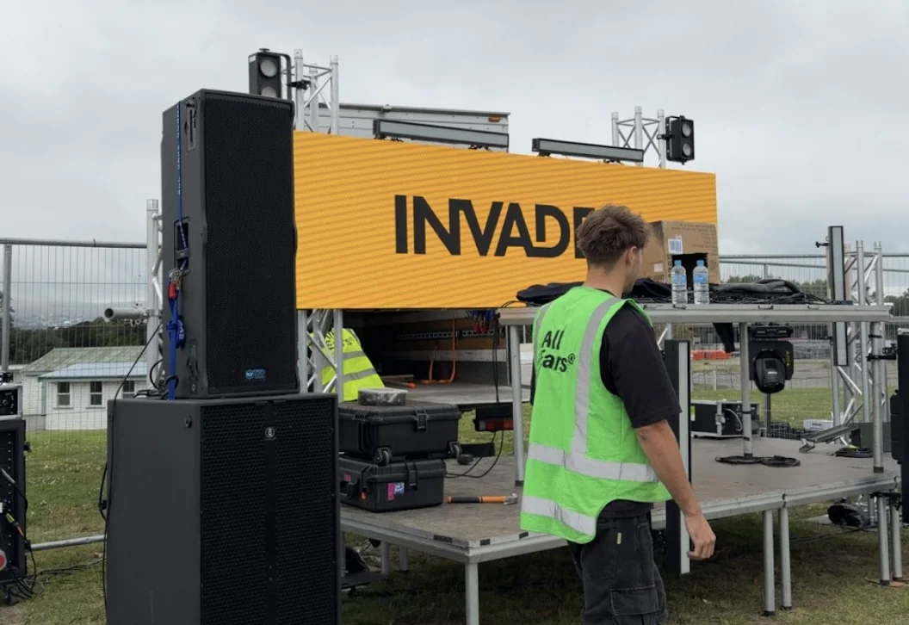
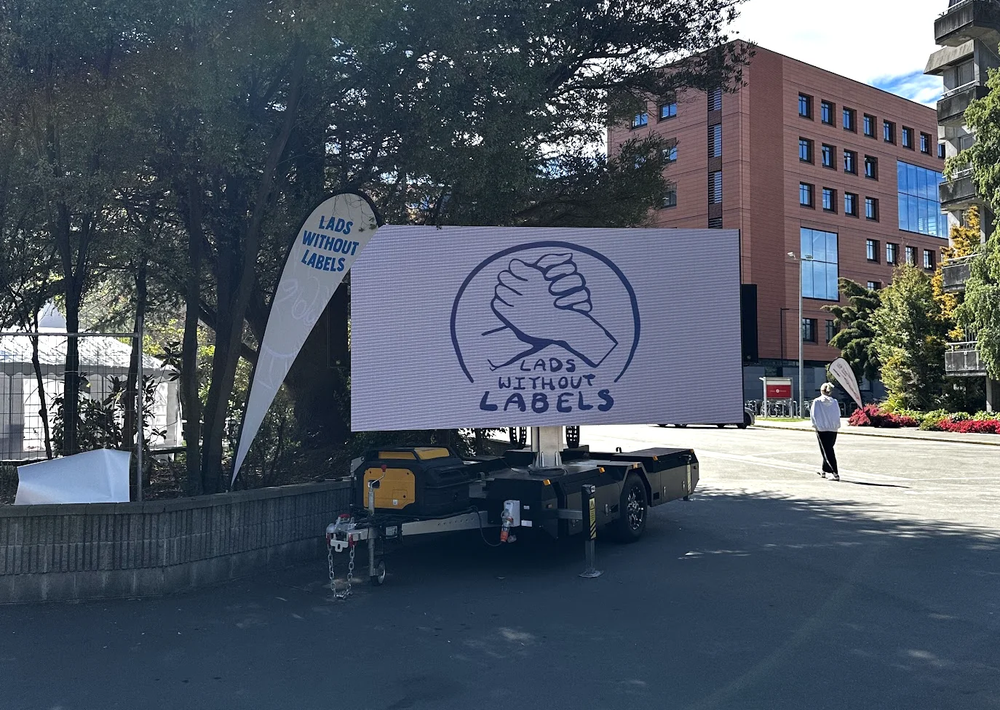

Our LED screens are modular panels that lock together to build a wall in whatever size your gig calls for. Conference stage backdrop, festival side screens, or a massive centrepiece behind the DJ. The panels are bright enough for outdoor use in direct sunlight and look sharp up close for indoor shows. We handle the build, the video processing, and the packdown.
We also have a 4m wide by 2.5m high LED screen mounted on a trailer. Tow it in, park it, plug it in, and you've got a big outdoor screen with zero build time. It's a cost-effective option for outdoor events, community screenings, sports days, and brand activations where you don't want the cost of a full truss-mounted screen build.

Individual panels that bolt together to make a screen in any size and aspect ratio. Indoor or outdoor rated. We bring the frames, the processors, and the cabling. You tell us how big, and we build it.
A 4m x 2.5m LED screen on a towable trailer. No rigging, no truss, no build crew needed. We deliver it, set the legs, and it's good to go. Great for outdoor gigs where speed and simplicity matter.
We run the video processing so you can send us live camera feeds, laptop presentations, pre-recorded video, or graphics and we'll get it on screen. Multiple inputs, switching, and scaling all handled by our AV crew.

This thing gets a lot of use. It's been to sports fields, car parks, community events, and brand activations around Canterbury. Just needs a flat spot to park and a power connection. No scaffolding, no truss, no structural engineer. It's the fastest way to get a big screen on site without the full production build.
We've put LED screens on festival stages, in conference centres, at corporate events, and at outdoor activations around Christchurch. Whether it's a single screen behind a presenter or side screens for a crowd of thousands, we've done it. The screens usually go out as part of a bigger production package with sound, lighting, and staging.
Check out our services page or get in touch for a quote.
Tell us the size and the show, and we'll price it up.
Get in touch or call 021 178 0355.
Our LED panels are modular, so we can build a screen to pretty much any size. Small screens for conference stages, wide panels for festival backdrops, or tall portrait screens for branding. Tell us the space and we'll work out the best size and resolution.
It's a 4m wide by 2.5m high LED screen permanently mounted on a trailer. We tow it to your site, park it, and it's ready to go. No truss, no rigging, no build time. It's a cost-effective option for outdoor events, community screenings, sports days, and brand activations.
Yes. We can run live camera feeds, presentation slides, pre-recorded video, branding graphics, and music visuals on the screens. We handle the video processing and switching so everything looks right on the day.
All Ears Events Limited
20 Southwark Street, Christchurch
021 178 0355 · hello@allears.nz
Mon-Fri 9am-4pm